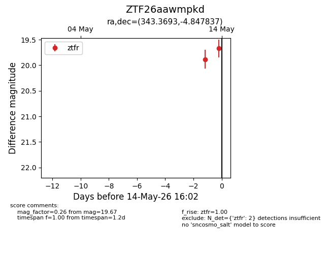
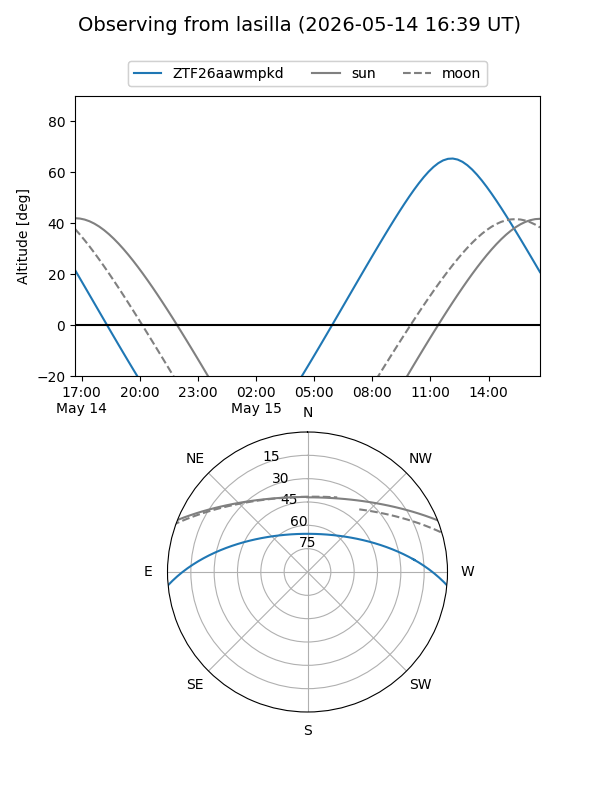
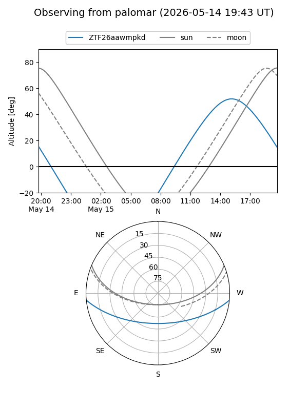

ZTF26aawmpkd
Target ZTF26aawmpkd at 2026-05-14 16:04
Aliases and brokers:
FINK: link
Lasair: link
ALeRCE: link
alt names
ZTF26aawmpkd (ztf,fink_ztf)
Coordinates:
equatorial (ra, dec) = 343.3693,-4.84784
equatorial (HMS+DMS) = 22:53:28.64,-04:50:52.21
galactic (l, b) = (66.0739,-54.13947)
Flags:
Photometry:
last ztfr=19.67
2 ztfr detections
Lightcurve

Visibility


Additional plots